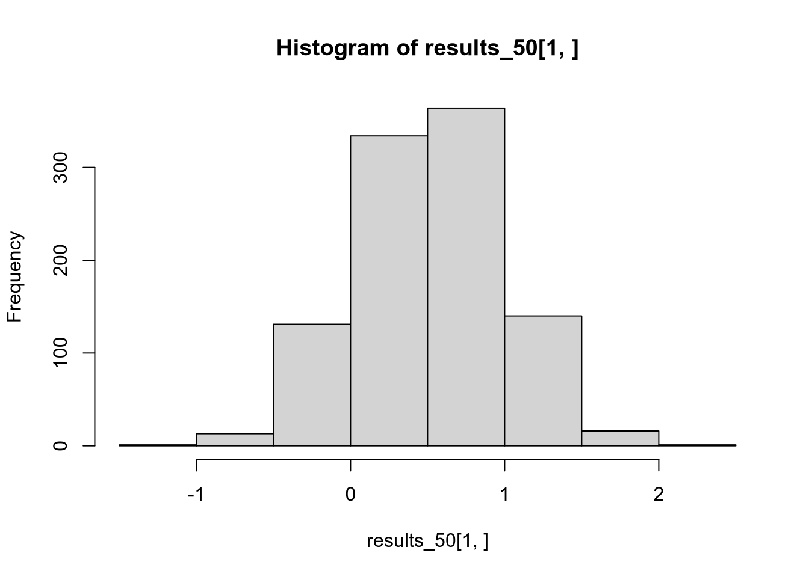
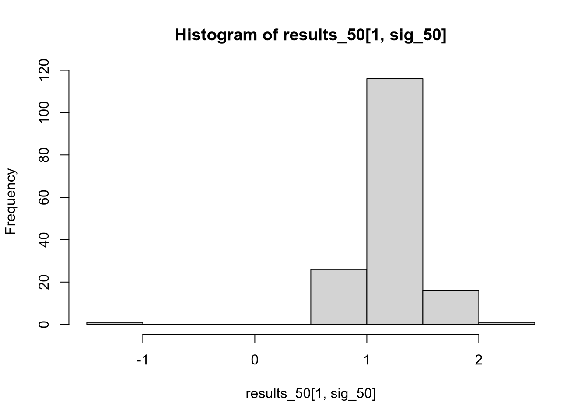
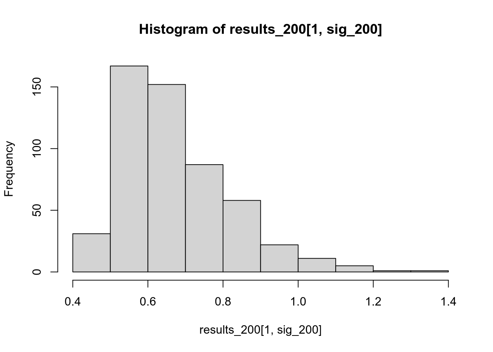

11 The Statistical Crisis in Science
As a general rule, I do not believe the statistical results reported in political science publications. More to the point, absent compelling evidence to the contrary, I assume that:
Reported effect sizes are biased upward in magnitude. The marginal effect of the key variable(s) in the population is likely less dramatic than what is reported.
Reported \(p\)-values are biased downward. The probability of making a Type I error, in case the null hypothesis were false and one followed the actual procedure that led to the reported results, is greater than what is reported.
My position is not one of blind skepticism. It follows, perhaps ironically, from empirical research showing that far more than 5 percent of studies do not replicate upon re-testing (Open Science Collaboration 2015). Ioannidis (2005) puts it bluntly: “Most published research findings are false.” Today we’ll discuss why.
I’ll follow Young, Ioannidis, and Al-Ubaydli (2008)’s economic analogy. Consider scientific publication as an economic activity, where researchers “sell” findings to journals in exchange for prestige. The demand-side problem is that journals will only “buy” statistically significant findings. Even absent any effects on author behavior, this practice makes published findings a biased sample of actual findings. But of course there are effects on author behavior. The supply-side problem is that authors try to produce “statistically significant” findings instead of scientifically sound findings.
There is far more out there on the replication crisis in science than we can cover in a week. Sanjay Srivastava’s faux syllabus, “Everything is fucked”, provides a more comprehensive treatment.
11.1 Publication Bias
If you open up an issue of any empirically oriented political science journal, you will not read many abstracts that conclude “We were unable to reject the null hypothesis of no effect.” You probably won’t see any. The prevailing attitude of reviewers and editors is that only significant results are interesting and only interesting results are worth publishing—so only significant results get published.
Consequently, published empirical findings are not a representative sample of all empirical findings. Andrew Gelman calls this the statistical significance filter: the publication process only reveals the findings of some studies, namely those that achieve statistical significance. If you draw your beliefs from scientific journals (particularly prestigious ones, as Ioannidis (2008) notes), you will end up with some false ideas about how the world works.
Some of these beliefs will be Type I errors: you will reject null hypotheses that are true. Suppose there is a treatment \(T\) that has no effect on an outcome \(Y\), and 100 labs run separate experiments of the effect of \(T\) on \(Y\). We would expect about 95 of these experiments to (correctly) fail to reject the null hypotheses, and about 5 to (incorrectly) reject it. But if some of the significant findings get published and none of the insignificant ones do, you will end up incorrectly believing the treatment affects the outcome.
But the statistical significance filter has another, less obvious—and thus more pernicious—effect on our inferences. Assume that the null hypothesis is indeed false: that the treatment \(T\) has an effect on the outcome \(Y\). Suppose once again that 100 labs run separate experiments of the effect of \(T\) on \(Y\). Depending on the power of the experiments, some proportion of them will (incorrectly) fail to reject the null hypothesis, and the remainder will (correctly) reject it. Because of the statistical significance filter, only the ones that reject the null hypothesis will get published.
That’s not so bad, right? Only the studies that reject the null hypothesis get published, but the null hypothesis is wrong! The problem comes in when we want to evaluate the size of the effect—what political scientists like to call “substantive significance.”29 On average, the statistically significant studies will tend to overestimate the magnitude of the effect. Viewing studies through the statistical significance filter, we will correctly infer that there is an effect, but we will systematically overestimate how strong it is.
Why does the statistical significance filter result in an overestimate of effect magnitudes? Imagine that the population regression coefficient is real but small, say \(\beta_k = 0.1\). Then the sampling distribution of \(\hat{\beta}_k\) will look something like the following graph. As a reminder, the sampling distribution is the distribution of estimates that we would get across samples, if we could draw infinitely many samples and run our regression on each of them.
Since the population parameter is close to zero, we are rather likely to yield a sample estimate close to zero. With a small sample size, sample estimates close to zero are likely to be statistically insignificant. Only the results in the “tails” of the distribution will end up being published.
The first time I read about this result, on Andrew Gelman’s blog, I didn’t believe it. (I should have believed it, because he’s a professional statistician and I’m not.) So I fired up R and ran a simulation to answer: if we only report our estimate of \(\beta_k\) when it’s statistically significant, will we overestimate its magnitude on average? The appendix to this unit contains a version of this same simulation.
11.2 \(p\)-Hacking
The statistical significance filter is a demand-side problem. The demand (by journals) for “insignificant” findings is too low. This in turn creates supply-side problems. Scientists’ careers depend on their ability to publish their findings. Since there is no demand for insignificant findings, scientists do what they can to conjure up significant results. In the best case scenario, this means devoting effort to projects with a high prior probability of turning up significant, rather than riskier endeavors. In the worst case, it means engaging in vaguely-to-definitely unethical statistical practices in a desperate search for significance.
One way to \(p\)-hack is to just define the significance level post hoc.

Luckily, this is pretty transparent. The convention, for better or worse, is a significance level of 0.05, and it’s easy to notice deviations from the convention. Look for the “daggers” in people’s regression tables, or language like “comes close to statistical significance.” Matthew Hankins’ blog post “Still Not Significant” is a comprehensive compendium of the weasel language people use to try to dress up their insignificant findings. See also Pritschet, Powell, and Horne (2016).
The more pernicious form of \(p\)-hacking is going fishing for something significant after one’s original hypothesis test “fails.” Let us once again imagine a lab performing an experiment. They are interested in the effect of a treatment \(T\) on an outcome \(Y\). To make it concrete, suppose the treatment is reading a particular editorial, and the outcome is where the respondent places himself or herself on a left-right ideological scale ranging between 0 and 1. The lab spends a lot of time and money recruiting subjects, running the experiment, and tabulating the data. They get their spreadsheet together, load their data into R, test for a treatment effect … and fail to reject the null hypothesis.
Damn. All that effort wasted, for a result that can’t be published. But wait! The op-ed was written by a man, and his picture appeared next to it. It seems plausible that it might only have an effect on men, or only one on women. So just to see, the lab re-runs the test once just for men and once just for women. They get a \(p\)-value just below \(0.05\) for the male subsample! Hooray! This is at least potentially a publishable finding!
What’s wrong with this picture? Let’s go back to the formal definition of the significance level.
The significance level of a hypothesis test is the probability of rejecting the null hypothesis when the null hypothesis is true.
If the null hypothesis is true, and 100 labs run the same experiment on it, we should expect about 5 of them to end up incorrectly rejecting the null hypothesis. Similarly, go back to the formal definition of a \(p\)-value.
The \(p\)-value of a test statistic is the probability of yielding a test statistic at least as extreme when the null hypothesis is true.
If the null hypothesis is true, we should expect only about 10 out of 100 labs to end up with \(p \leq 0.10\), 5 out of 100 to have \(p \leq 0.05\), and so on.
The problem with this hypothetical procedure—testing post hoc for effects within subgroups after the main test comes back insignificant—is that the stated significance level is not the real significance level. If you run three different tests and reject the null hypothesis if any of them comes back with \(p \leq 0.05\), you will reject the null hypothesis more often than 5% of the time. In our running hypothetical example, the lab’s reported \(p\)-value of 0.05 is a lie.

There are many ways to \(p\)-hack:
- Splitting up data by subgroups post hoc
- Changing the set of variables you control for
- Changing the operationalization of the covariate of interest or the response variable
- Changing the time period of the analysis
- Stopping data collection as soon as \(p \leq 0.05\)
What all these have in common is that the final test you report depends on the result of some earlier test you ran. All standard hypothesis tests assume that you didn’t do anything like this—that this was the only test you ran, that your initial results didn’t influence your choice of further tests. It is unethical to report the nominal \(p\)-value (i.e., the value your computer spits out) from a \(p\)-hacked test, because the true probability of getting a result at least as extreme is greater than the nominal value.
11.3 What to Do
At a macro level, we should probably:
Assume the magnitudes of published results are exaggerated, and adjust our own beliefs accordingly.
Collect new data to replicate published findings, and adjust our beliefs in the direction of the replication results.
When reviewing others’ papers, don’t judge on the basis of significance. Try to be “results-blind.” Assess whether the research design is well suited to address the question at hand, not whether it turned up the results the author wanted, or the results you want, or interesting or surprising or counterintuitive results, etc.
When writing your own papers, focus on research designs that are clever and novel. Write papers that will be interesting to the political science community regardless of whether the results are statistically significant.
And at a more micro level, to avoid \(p\)-hacking in your own research:
Decide exactly which hypothesis you want to test and which test to run before you collect your data, or at least before running any analysis on it.
Report every test you perform on the data, and only highlight results that are robust across tests.
Randomly split your sample before performing any tests. Go wild with the first half of the sample looking for an interesting hypothesis. Then test that hypothesis on the other half of the sample (and report the results whether they come out in your favor or not). Equivalently, hack your pilot data and then go out and collect new data to try to replicate your hacked initial hypothesis.
Apply a correction for multiple hypothesis testing.
11.4 Appendix: R Simulation
Let’s run a simulation to see how publication bias affects scientific output.
Imagine a bivariate regression situation where \(X\) has a small but real effect on \(Y\). Specifically, let the population model be \[ Y_n = 1 + 0.5 X_n + \epsilon_n, \] where \(X_n\) is uniformly distributed on \([0, 1]\) and \(\epsilon_n\) is normally distributed with mean zero and variance one.
We can use the random number generation functions in R to draw a sample from this population model. Let’s draw a sample of \(N = 50\) observations.
n_obs <- 50
x <- runif(n_obs, min = 0, max = 1)
y <- 1 + 0.5 * x + rnorm(n_obs, mean = 0, sd = 1)
plot(x, y)We know the true slope is non-zero, though with such a small effect and such a small sample it’s hard to tell from the scatterplot.
We can run a regression of \(Y\) on \(X\) and extract the estimated slope and its \(p\)-value (for a test of \(H_0 : \beta = 0\)).
library("tidyverse")
library("broom")
fit <- lm(y ~ x)
tidy(fit) # Full regression table## # A tibble: 2 x 5
## term estimate std.error statistic p.value
## <chr> <dbl> <dbl> <dbl> <dbl>
## 1 (Intercept) 1.22 0.289 4.22 0.000108
## 2 x 0.177 0.460 0.386 0.702tidy(fit)[2, c("estimate", "p.value")] # Parts we want## # A tibble: 1 x 2
## estimate p.value
## <dbl> <dbl>
## 1 0.177 0.702This just gives us one instance of what we would get from this type of sample from this particular model. What we’re really interested in, though, is the sampling distribution—the distribution of results we would get across many samples from this model. More specifically, we want to answer two questions.
If the results of every sample from this model were made public, what would we infer from the full body of evidence?
If only the statistically significant results were made public, what we infer from the published body of evidence?
To make that task a bit simpler, let’s write a function that collects everything we just did: generates a sample of size n_obs, runs a regression of \(Y\) on \(X\), and spits back the estimated slope and its \(p\)-value.
draw_slope_and_p <- function(n_obs) {
x <- runif(n_obs, min = 0, max = 1)
y <- 1 + 0.5 * x + rnorm(n_obs, mean = 0, sd = 1)
fit <- lm(y ~ x)
out <- tidy(fit)[2, c("estimate", "p.value")]
as.numeric(out) # Convert data frame to vector
}Since this function is drawing random numbers, it will return different results every time we run it.
draw_slope_and_p(50)## [1] 0.3873035 0.3692928draw_slope_and_p(50)## [1] 0.212866 0.674392Now what we want to do is to run this function a whole bunch of times, say 1,000. That lets us imagine what would happen if 1,000 different labs each took a different sample of size \(N = 50\) from the population, estimated the slope of the regression line, and tested against the null hypothesis that the slope is zero. To do that, we can use the replicate() function, which is a convenient way to run the same function repeatedly.
results_50 <- replicate(1000, draw_slope_and_p(50))
dim(results_50)## [1] 2 1000This gives us a \(2 \times 1000\) matrix. Each column is a separate run of draw_slope_and_p(). The first row is the estimated slope; the second row is the associated \(p\)-value.
First let’s check how often we rejected the null hypothesis. The null hypothesis is false, so we would ideally always reject it. However, we have a small effect size and each individual sample is small, so the effect is hard to detect in any given sample—we will often fail to reject the null hypothesis. Let’s see exactly how often.
# Proportion of p-values at or below 0.05
sig_50 <- results_50[2, ] <= 0.05
mean(sig_50)## [1] 0.16So the power of our study is not great—most of the time, we’re failing to reject the null hypothesis.
Let’s see what the average estimated slope is across the full set of samples.
mean(results_50[1, ])## [1] 0.5205715This is pretty close to the true value, reflecting the fact that OLS is unbiased. If all 1,000 studies were made public, we would ultimately infer—correctly—that the population slope is roughly 0.5.
But what if we only saw the small fraction of studies whose results were statistically significant?
# Restrict to columns where p <= 0.05
mean(results_50[1, sig_50])## [1] 1.210619We might be tempted to trust these studies more, since they are the ones that correctly reject the null hypothesis. But in fact, if we throw away those that are statistically insignificant, we end up with a biased picture of the effect size. The average effect size in the significant studies is more than double the true effect size. We can see this if we compare the distribution of all results to that of just the significant results.
hist(results_50[1, ])
hist(results_50[1, sig_50])
We can also see that this problem stems in large part from low statistical power. Suppose each lab were taking a sample of \(N = 200\) instead of \(N = 50\), making their effect estimates more precise and thereby increasing each lab’s chance of (correctly) rejecting the null hypothesis.
results_200 <- replicate(1000, draw_slope_and_p(200))
sig_200 <- results_200[2, ] <= 0.05
# Power
mean(sig_200)## [1] 0.535# Average estimate through the significance filter
mean(results_200[1, sig_200])## [1] 0.6740676hist(results_200[1, sig_200])
The significance-filtered average is still overinflated, but not nearly as drastically as when we were working with a small sample.
Mini rant: In my admittedly short career in political science, I have seen zero talks or papers claim to have found a statistically significant but substantively insignificant result. I have, however, seen talks that claimed a 0.001% increase constituted a substantively significant finding. Without a threshold for substantive significance that is decided on before the results are obtained, any claim about substantive significance is incredible.↩︎